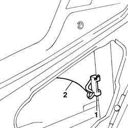
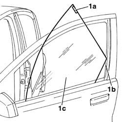

7005D14 front side door descending window glass - r r with door panel (and mount frame) removed
- Path
- Procedures > 70 FITTINGS > 7005 PASSENGER COMPARTMENT FRONT SIDE DOORS > 7005D front side door window glasses > 7005D14 front side door descending window glass - r r with door panel (and mount frame) removed
- Kind
- repair procedure (removal / refitting; the operation number is the code)
- Applies to
- all engines; all production periods
- Interactive page
- https://sloeber94.github.io/elrnDB-fPnd/en/#/2753051
Applies to: all engines; all production periods
 Removing
Removing
 Refitting
Refitting5570T91 Front SIDE LOUDSPEAKER. (one), left or right - R.R. with door panel removed
7005A04 front side door water guard protection - r r or replace with door panel removed
7005D26 front side descending window glass scraper (outer) r r
1. Raise the window glass until the safety retainer can be disengaged.
2. Disengage the window glass from the drive pin.

Applies to: all engines; all production periods
1. Disengage the window fixing piece (1a) from the runner (1b), and rotate and extract the window glass (1c) from the door frame.

Applies to: all engines; all production periods
Refitting
RemovingCheck the condition of the window, the fixing piece, the run channel, the drive pin and the safety retainer.
Fit the window glass in its seating in the door frame.
Secure the fixing piece in the runner.
Sllide the window glass until the drive pin hole is accessible.
Connect the drive pin and engage the safety retainer.
Check that the window is working properly.
7005D26 front side descending window glass scraper (outer) r r
7005A04 front side door water guard protection - r r or replace with door panel removed
5570T91 Front SIDE LOUDSPEAKER. (one), left or right - R.R. with door panel removed
Topics linked from this page (3)
- 5570T91 Front SIDE LOUDSPEAKER. (one), left or right - R.R. with door panel removed
- 7005A04 front side door water guard protection - r r or replace with door panel removed
- 7005D26 front side descending window glass scraper (outer) r r